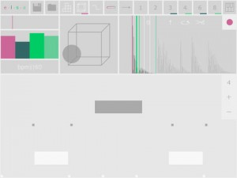

Elsa is a retro style sampling keyboard with tempo based looping. Record, save, load, reverse samples with a multi octave on screen keyboard or plug in your core midi device of choice, soft- or hardware. Elsa comes with three built in effects, a reverb, a resonant low pass filter and a frequency/bit crush. Samples are looped in three different modes, one off, forward and/or forward-reverse. The start and end of playback also comes in three modes, one set of start and stop for all, one set per note and/or one set per octave, allowing for many different types of samples. Additionally at playback time, sample length can also be controlled by a set of sample dividers, 1-8.
+++ Sample keyboard
+++ Tempo based looping
+++ ADSR
+++ Bit crush
+++ Reverb
+++ Resonant low pass filter
+++ Record, trim, normalise, reverse, pre note shift, zoom
+++ Multi octave keyboard
+++ 3 loop modes (one off, forward, forward-reverse)
+++ 3 start/stop modes (one for all, one per note, one per octave)
+++ Playback length dividers (1,2,3,4,5,6,7,8)
+++ Save/Load
+++ Import/Export ACP 2.0
+++ Inter app audio (audiobus)
+++ Core Midi (note input)
[appext 833671355]


{kind=link}
{kind=link}
{kind=link}
{kind=link}
{kind=link}
{kind=link}
{kind=link}
{kind=link}
{kind=link}
{kind=link}